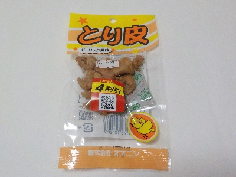

オオニシのとり皮ガーリック風味。
2024/03/01

普段この手の商品は買わないんですが、4割引で安かったので手に取りました。
13グラムしか入ってなくて通常127円は高価でなかなか買えないです。
私はおつまみを沢山食べたいと思うタイプなので、これ一袋で満足する人がうらやましいと思っていました。
この商品はとってもドライでサクサクでした。鶏皮らしさもあり、美味しかったです。
カラカラなので脂をあまり感じませんでしたが、しっかりあったみたいで今日のおつまみはこれ1袋でした。